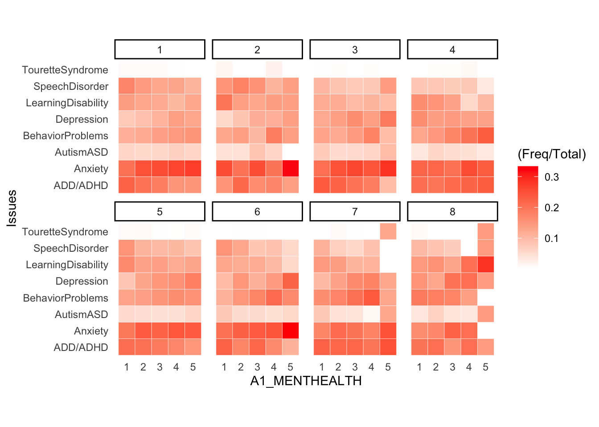
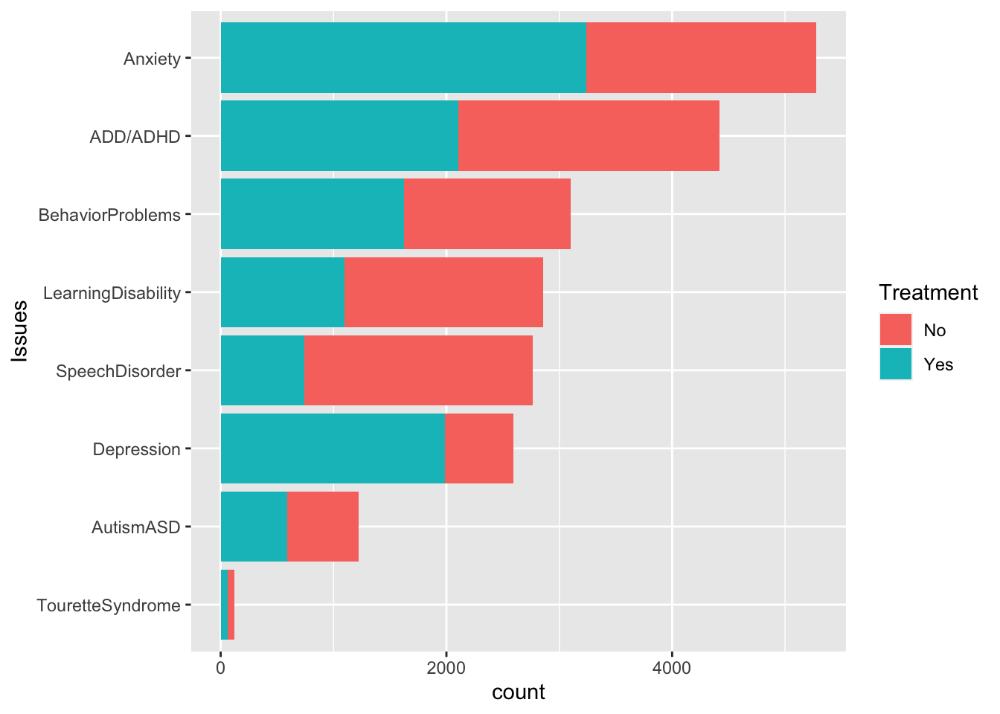
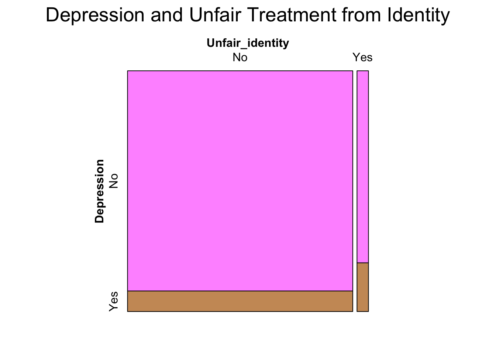
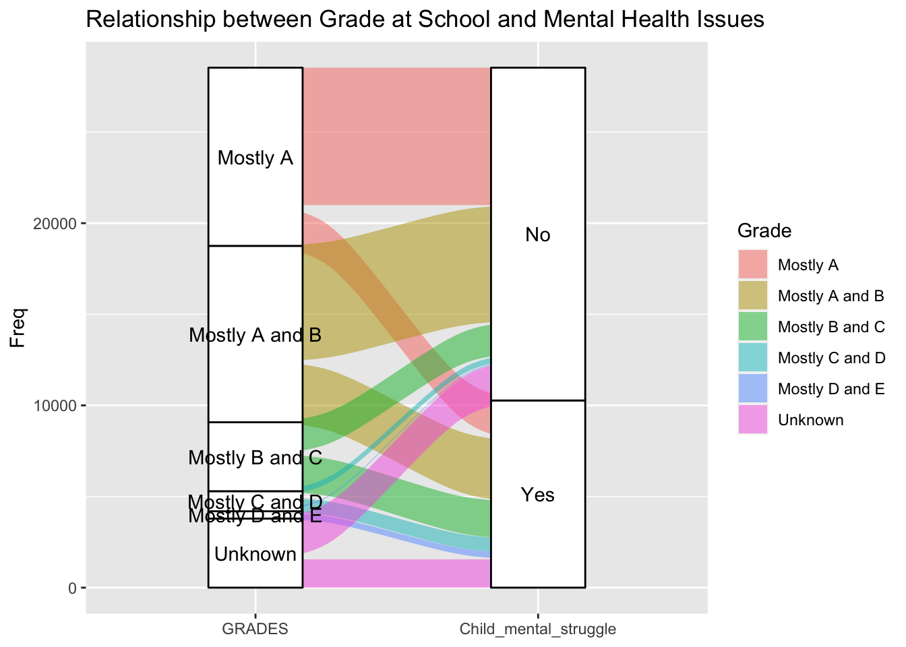
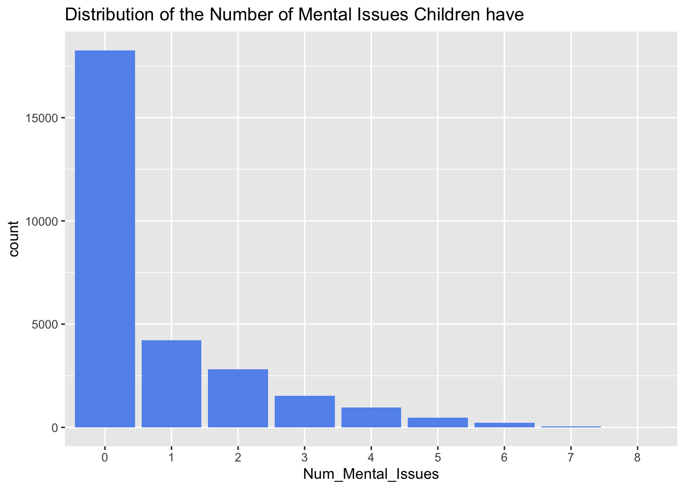

── Conflicts ────────────────────────────────────────── tidyverse_conflicts() ──
✖ dplyr::filter() masks stats::filter()
✖ dplyr::lag() masks stats::lag()
ℹ Use the conflicted package (<http://conflicted.r-lib.org/>) to force all conflicts to become errors
We select to include relevant columns. For details about the meaning of each column, please refer to data.qmd. We only study children between age 6-17, so we filter out the T1 children.
In the end of preprocessing, we stored the data as a csv file called nsch.csv inside the data folder
3.2 Guardian’s Influence on Children’s Mental Health
Guardian can play a variety of roles in children’s life: caregiver, educator, friends, and spirit leader. In this section, we are going to explore the relationship between guardian’s information and child’s mental health issues. Notice that this survey of children’s health is filled by A1, one of the child’s guardians, while some questions asked about background information of the whole household.
A1_EMPLOYED ‐ Adult 1 ‐ Current Employment Status (T1 T2 T3) Which of the following best describes your current employment status? 1 = 8th grade or less 2 = 9th‐12th grade; No diploma 3 = High School Graduate or GED Completed 4 = Completed a vocational, trade, or business school program 5 = Some College Credit, but No Degree 6 = Associate Degree (AA, AS) 7 = Bachelor’s Degree (BA, BS, AB) 8 = Master’s Degree (MA, MS, MSW, MBA) 9 = Doctorate (PhD, EdD) or Professional Degree (MD, DDS, DVM, JD)
This graph explain the co-effect of A1’s education level and employment status on child’s mental health. We didn’t include other employment type like partly employed, and we didn’t separate mental struggles into specific health issues like depression or anxiety. We tried to find a general pattern of A1’s influence in terms of their work and knowledge. Here’s what we find:
Among all the children been investigated, children with mental health problem is less than a half.
Fully employed people mostly comes from educational background 7 and 8, which means that the highest school completed are Bachelor’s Degree (BA, BS, AB) or Master’s Degree (MA, MS, MSW, MBA).
No matter A1 is fully employed or not, when A1 has Some College Credit, but No Degree or Associate Degree (AA, AS), their child is slightly easier to be told to have mental issues based on the higher proportion indicated in the mosaic plot.
When A1 identify themselves to complete 12th grade or less school, a smaller proportion of their child reports mental health struggles.
3.2.2 WIthin children with mental struggles, what’s proportion of each problem with respect to A1_MENTHEALTH, facet by FAMILY_R
`summarise()` has grouped output by 'FAMILY_R', 'A1_MENTHEALTH'. You can
override using the `.groups` argument.

FAMILY_R ‐ Family Structure (T1 T2 T3) 1 = Two biogical/adoptive parents, currently married 2 = Two biogical/adoptive parents, not currently married 3 = Two parents (at least one not biological/adoptive), currently married 4 = Two parents (at least one not biological/adoptive), not currently married 5 = Single mother 6 = Single father 7 = Grandparent household 8 = Other relation A1_MENTHEALTH ‐ Adult 1 ‐ Mental or Emotional Health (T1 T2 T3) In general, how is your mental or emotional health? 1 = Excellent 2 = Very Good 3 = Good 4 = Fair 5 = Poor
In this heatmap, we explored the distribution of mental health issues among each different family structure and A1’s mental health status. A1’s mental status is indicated by number in the x-axis (larger number means less healthy), and each facet represent a different family structure. In each column of each facet, the heatmap value (Freq/Total) can be summed to 1. Notice that since a child might have multiple mental health issues, here the total Freq will not be the total number of children having struggles (Freq > NumPeople). Here’s what we’ve discovered:
Among all mental issues, Tourette Syndrome have fewest proportion for mostly of times. Disregarding the Simpson’s paradox, we can probability conclude from the graph that this is the least common issues among the 8 problems we investigated.
Outliers are find mostly in A1 with poor mental status from family structure 7 and 8. This might implies that poor mental health status of guardians and non-mainstream family structure (Grandparent household or Other) together have a negative impact on children. Or this might be just an coincidence because of small sample size of these group.
Except for A1 with poor mental status from family structure 7 and 8, distribution of child’s mental problems seem to have the following pattern:
Anxiety and ADD/ADHD are the most common issues, and Tourette Syndrome and Autism ASD are the least common issues.
Among children who have mental disease and have a guardian reporting a poor mental status, a larger proportion is having Anxiety.
Warning: Using an external vector in selections was deprecated in tidyselect 1.1.0.
ℹ Please use `all_of()` or `any_of()` instead.
# Was:
data %>% select(mental_ls)
# Now:
data %>% select(all_of(mental_ls))
See <https://tidyselect.r-lib.org/reference/faq-external-vector.html>.

We are also curious about how many child has received treatment after they are been diagnosed. The counting strategy is the same with the previous heatmap: we are counting the cases instead of total people because there exist people with multiple mental problems. From this bar chart, we found that Anxiety and ADD/ADHD are the most common problems. In addition, Anxiety and depression have very high treatment rate. Even though Learning Disability and Speech Disorder have similar total case as Depression (even higher), most of children didn’t get treatment. This might be caused by the capability and advisement of counseling institutes. Also, guardians’ tend to believe that Behavior Problem and Learning Disability will disappear when the child grow up. Let’s explore how does the age of A1 influence there choice of having their child treated or not.
In this graph, we are not looking at cases anymore. One child will only match one data point of the plotting dataframe. We are looking for the A1’s Age distribution of children who suffer from mental issues. From the Ridgeline, we can see that ages are roughly normally distributed. Among the 2 distribution, children without treatment have a slight right skewed guardian’s age distribution. It is hard to tell more difference from ridgeline alone.
Thus, we add boxplots to the graph, and we can find that the median age of A1 who has their children treated is higher. This might be caused by stronger economic support they can provide.
3.3 Children’s experience and mental health
Children’s mental well-being is intricately linked to their life experiences, with unfair or distressing encounters potentially contributing to various mental health challenges. Consequently, our objective is to delve into the correlation between children’s experiences and the emergence of mental health issues.
3.3.1 Are children more likely to be depressed if they have been treated unfairly because of gender identity or sexual orientation?
`summarise()` has grouped output by 'Unfair_identity'. You can override using
the `.groups` argument.
Code
mosaic(Depression ~ Unfair_identity, data=unfair_depress, direction =c("v","h"), main ="Depression and Unfair Treatment from Identity",highlighting_fill = icecreamcolors)

To investigate this question, we drew a mosaic plot with two variables:
unfair_identity: referred as ACE10 in the original data, showing whether the child has ever experienced unfair treatments because of gender identity or sexual orientation
depression: referred as K2Q32A in the original data, showing whether the child has depression
The mosaic plot analysis reveals a compelling connection between the independent variable “unfair_identity” and the dependent variable “depression.” Specifically, when examining the data by splitting “depression” horizontally and “unfair_identity” vertically, a notable pattern emerges: children who have experienced unfair treatment due to their gender identity or sexual orientation appear to be more susceptible to depression.
These findings underscore the importance of heightened awareness among parents, educators, and schools regarding the potential mental health impact on children who face discrimination based on their identities. The data strongly suggests that such children may require additional care and support to navigate the challenges associated with unfair treatment.
3.3.2 How does being a victim of violence, living with people with alcohol problems, and experiencing parent divorce affect children’s mental health respectively?
Besides unfair treatment out of chidren’s identities, children may so suffer from other unpleasing experience like violence, living with people with alcohol or drug, or parent divorce. To investigate and compare the relationship between those experience and mental health, we drew a stacked bar chart with facets.
The variables included in the bar chart are:
Child_mental_struggle: shows whether the child has mental health issues, and it returns “Yes” if the child suffers from any type of mental issues, and “No” otherwise.
Alcohol_drug: referred as ACE9 in the original data, showing whether the child has experience living with people with alcohol or drug issues.
Parent_divorce: referred as ACE3 in the original data, showing whether the child has experienced parent divorce.
Victim_violence: referred as ACE7 in the original data, showing whether the child has been a victim of violence.
Upon comparing the proportions represented by each segment of the stacked bars, a notable pattern emerges. Remarkably, over 50% of children who have experienced living with individuals facing alcohol or drug issues exhibit some form of mental health challenges. Similarly, a significant majority of children who have been victims of violence also demonstrate a higher prevalence of mental health issues. In contrast, children whose parents have undergone divorce show a lower ratio, with less than half experiencing mental health concerns. While this percentage is comparatively lower than those associated with other adverse experiences, it is essential to note that children with divorced parents still exhibit a higher likelihood of facing mental health problems when compared to those who haven’t experienced parental divorce.
3.3.3 What’s the relationship between children’s grade at school and mental health issues
Code
value_mapping <-data.frame(original=c(1,2,3,4,5,6),replacement=c("Mostly A", "Mostly A and B", "Mostly B and C", "Mostly C and D","Mostly D and E", "Unknown"))grade_mental <- nsch_df |>mutate(Child_mental_struggle =ifelse(rowSums(nsch_df[, mental_ls] ==1) >0,"Yes", "No")) |>mutate(Grade=value_mapping$replacement[match(GRADES,value_mapping$original)]) |>#mutate(Depression = ifelse(nsch_df$K2Q32A == 1, "Yes", "No")) |>#mutate(Grade = ifelse(nsch_df$GRADES == 1, "Yes", "No")) |>group_by(Grade,Child_mental_struggle)|>summarize(Freq =n())
`summarise()` has grouped output by 'Grade'. You can override using the
`.groups` argument.
Code
ggplot(grade_mental, aes(axis1 = Grade, axis2 = Child_mental_struggle, y=Freq)) +geom_alluvium(aes(fill = Grade), width =1/12) +geom_stratum() +geom_text(stat ="stratum", aes(label =paste(after_stat(stratum)#, "\n", after_stat(count) )))+ggtitle("Relationship between Grade at School and Mental Health Issues")+scale_x_discrete(limits =c("GRADES", "Child_mental_struggle"))

Children’s grades may also be correlated with mental health. To study the relationship between grades and mental health issues, we made an Alluvial Diagram.
There are two variables in the diagram:
GRADES: shows the grade of a child at school and it has six levels: mostly A’s, mostly A’s and B’s, mostly B’s and C’s, mostly C’s and D’s, mostly D’s and E’s, and unknown if the school don’t provide grades.
Child_mental_struggle: shows whether the child has mental health issues, and it returns “Yes” if the child suffers from any type of mental issues, and “No” otherwise.
The findings underscore a significant correlation between academic performance and mental health among children. Notably, those who predominantly receive C’s and D’s, or D’s and E’s, exhibit a notably higher likelihood of experiencing mental health issues compared to their counterparts with better grades. Furthermore, the trend indicates that as academic performance improves, the likelihood of mental health issues decreases.
This correlation aligns with a logical interpretation: children facing challenges in academic achievement, marked by lower grades, may experience feelings of depression or anxiety. Conversely, children dealing with mental health issues may encounter difficulties concentrating in class, potentially impacting their academic performance negatively. The observed relationship suggests a mutual effect between grades and mental health.
The result provide suggestions for educators and parents. It emphasizes the importance of support systems that consider both academic and mental well-being. Targeted interventions addressing the reciprocal relationship between grades and mental health can contribute to fostering a positive and supportive learning environment for children.
3.4 Mutual effect of mental health problems on children
3.4.1 Distribution of the Number of Mental Issues Children have
Code
mental <-select(nsch_df,K2Q30A,K2Q31A,K2Q32A, K2Q33A, K2Q34A,K2Q35A,K2Q37A,K2Q38A)mental$Num_Mental_Issues <-as.character(rowSums(mental ==1))ggplot(mental, aes(x = Num_Mental_Issues)) +geom_bar(fill ="cornflowerblue") +ggtitle("Distribution of the Number of Mental Issues Children have")

We first drew a bar chart to show the distribution of the number of mental issues children have. We only have one variable: Num_Mental_Issues, which shows the number of mental issues each child has. It is calculated by counting the number of “Yes” in different mental health issues of each child.
From the result, we can see that the majority of children don’t have any mental health issues, or only suffer from one mental disease. However, there are still a lot of children suffering from multiple mental issues. It is likely that some mental issues have mutual effect on each other, and we need to investigate more on it.
3.4.2 The relationship between Depression, Anxiety and ADD/ADHD
Code
mental_issues <- nsch_df |>mutate(Depression =ifelse(nsch_df$K2Q32A ==1, "Deression", "No Depression")) |>mutate(Anxiety =ifelse(nsch_df$K2Q33A ==1, "Anxiety", "No Anxiety")) |>mutate(ADD_ADHD =ifelse(nsch_df$K2Q31A ==1, "ADD/ADHD", "No ADD/ADHD")) |>group_by(Depression,Anxiety,ADD_ADHD)|>summarize(Freq =n())
`summarise()` has grouped output by 'Depression', 'Anxiety'. You can override
using the `.groups` argument.
Depression, anxiety and ADD/ADHD are three very common mental health issues, and they are likely to affect each other. To explore if children with one of the issues are more likely to have other issues as well, we drew an Alluvial Diagram of three variables:
Depression: referred as K2Q32A in the original data, showing whether the children has ever had depression
Anxiety: referred as K2Q33A in the original data, showing whether the children has ever had anxiety
ADD/ADHD: referred as K2Q31A in the original data, showing whether the children has ever had ADD/ADHD
From the graph, we can see that the majority of children who suffer from depression also suffer from anxiety. Additionally, approximately half of those contending with both depression and anxiety also exhibit symptoms of ADD/ADHD. Moreover, an apparent correlation is observed between anxiety and ADD/ADHD, with nearly half of the children diagnosed with ADD/ADHD also reporting symptoms of anxiety.
These findings align with expectations, as depression often coexists with anxiety. Additionally, the challenges of concentration faced by children with ADD/ADHD may contribute to feelings of distress or anxiety. By fostering an understanding that depression, anxiety, and ADD/ADHD are not isolated entities but rather components of a complex web, parents and educators can play pivotal roles in providing comprehensive and tailored support. This involves not only addressing specific symptoms but also acknowledging the potential effects that each condition may have on the others.
PHYSACTIV ‐ Exercise, Play Sport, or Physical Activity for 60 Minutes (T2 T3) DURING THE PAST WEEK, on how many days did this child exercise, play a sport, or participate in physical activity for at least 60 minutes? 1 = 0 days 2 = 1 ‐ 3 days 3 = 4 ‐ 6 days 4 = Every day
We want to know the impact of each mental health problems on physical activity and physical pain. Each facet represents a different mental issue, while the physical activity levels are separated as bars. Colors are used to represent how many of the cases will have physical pain. Here’s what we found:
The general pattern of PHYSACTIV is that the count of different level are ranked $2>3>4\approx 1$. Which means most people exercise 1-3 days a week, and large proportion do 4-6 days a week. It is less likely to exercise everyday or 0 days a week.
Children with Depression tend to do less physical activities. Although the total counts is significantly less than ADD/ADHD and Anxiety, the number of people doing no sports at all is similar.
Children with Speech DIsorder tend to do more physical activities: the proportion of children doing sports everyday is higher than average, and the proportion of children doing no sports is lower than average.
For every subpopulation (represented by bars), the rate of physical pain appears to be similar. From this graph, it is hard to tell the difference across subpopulations, so we cannot give conclusion on general patterns of physical pain.